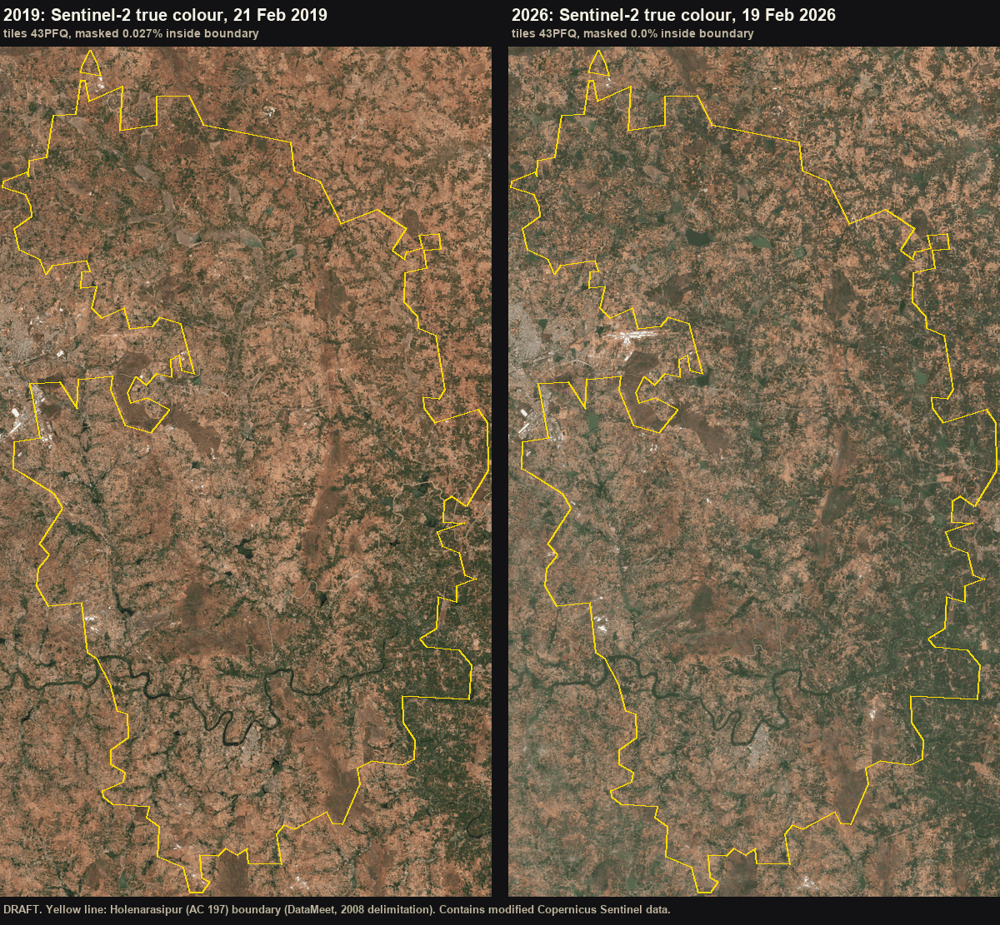
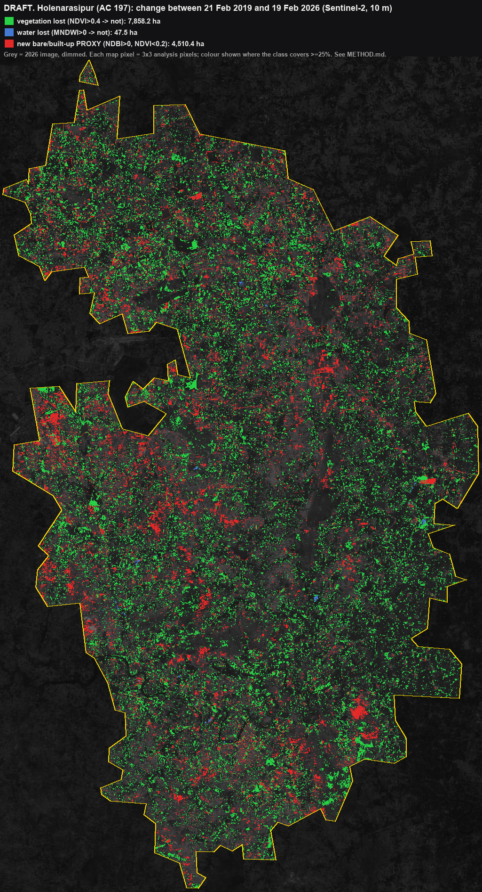
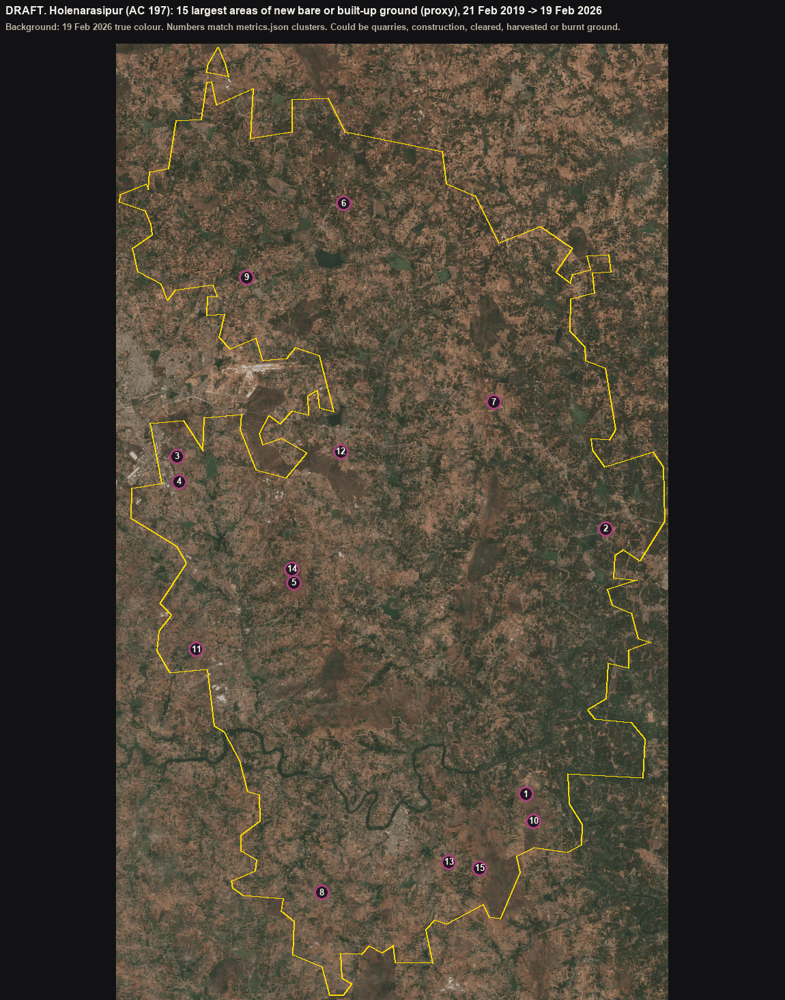

Two cloud-free Sentinel-2 satellite pictures of Assembly constituency 197 in Hassan district are compared pixel by pixel at 10 m. They were taken two days apart in the calendar, seven years apart: 21 February 2019 and 19 February 2026. This is the third constituency in a series that covers a seat held by each of the three main parties. It measures land cover only and says nothing about who caused any change.
Holenarasipur is farmland and tanks. On the 30 clean dates checked, green cover moved 7 to 10 points within a single February. Around 19 to 21 February it stood at 34% in 2019, 47% in 2025 and 41% in 2026. 2026 was greener and less bare than 2019 on every matched pair of dates, by 8 to 25 points, so the direction holds; the pair used below shows the smallest gap of all. That fits a dry 2018-19 season and a wet 2025-26 one. Do not quote the tiles below as land restored. The fuller tanks are real for that date, but tanks fill and empty with each monsoon.
Share of the constituency with NDVI above 0.4, computed at 20 m on every Sentinel-2 date with less than 1% cloud inside the boundary (tile 43PFQ). Large dots are the two dates used for the tiles and maps. The gap between years is mostly how wet the previous monsoon was.


| Area | Hectares | Green 2019 | Green 2026 | Green lost (ha) | Green gained (ha) | New bare (ha) |
|---|---|---|---|---|---|---|
| Inside protected areas and forests (OSM) | 588 | 32.4% | 34.2% | 68 | 79 | 1 |
| Everywhere else | 94,465 | 33.8% | 41.0% | 7,790 | 14,650 | 4,509 |
OpenStreetMap outlines inside the boundary: Gendekatte forest (50 ha). OpenStreetMap maps only about 588 ha of forest here and no protected area, so this split says little.
| Water body (OpenStreetMap) | Location | Water 2019 | Water 2026 | Change | Green on it 2019 | Green on it 2026 |
|---|---|---|---|---|---|---|
| Unnamed (way/59748146) | 13.0721, 76.2079 | 1.1 | 109.8 | +108.7 | 25.5 | 9.3 |
| Unnamed (way/119067640) | 12.9933, 76.3358 | 0.0 | 47.8 | +47.8 | 2.1 | 1.4 |
| Unnamed (way/59748151) | 13.1216, 76.2252 | 0.1 | 41.5 | +41.4 | 3.4 | 5.6 |
| Shantigrama Kere ಶಾಂತಿಗ್ರಾಮ ಕೆರೆ | 12.9929, 76.2127 | 12.7 | 52.1 | +39.4 | 29.7 | 8.0 |
| Unnamed (way/119067636) | 12.9619, 76.2425 | 1.7 | 39.5 | +37.8 | 22.4 | 22.6 |
| Koushika Kere ಕೌಶಿಕ ಕೆರೆ | 12.9662, 76.1483 | 6.5 | 43.4 | +36.9 | 9.3 | 0.4 |
| Unnamed (way/59748147) | 13.0697, 76.2443 | 31.1 | 65.6 | +34.5 | 7.3 | 9.8 |
| Unnamed (way/158811644) | 13.0912, 76.1971 | 0.0 | 28.6 | +28.6 | 3.2 | 9.3 |
| Unnamed (way/119067637) | 12.9550, 76.3492 | 0.0 | 28.0 | +28.0 | 10.1 | 3.2 |
| Unnamed (way/59748148) | 13.0624, 76.2697 | 5.0 | 30.8 | +25.8 | 18.8 | 28.7 |
245 water polygons in OpenStreetMap touch the boundary and 12 have names; those of at least 2 ha are measured. "Green on it" is usually weeds or crops on a dry bed. Tanks fill and empty with each monsoon, so one February picture says little about a tank's long-term state. "Edge" marks a polygon that crosses the boundary; only the part inside is counted.

| # | Hectares | Location (opens map) | Green in 2019 | In OSM forest | Burn index (dNBR) |
|---|---|---|---|---|---|
| 1 | 40.0 | 12.8014, 76.3087 | 0% | 0% | 0.05 |
| 2 | 34.0 | 12.9346, 76.3504 | 28% | 0% | 0.12 |
| 3 | 29.1 | 12.9721, 76.1304 | 7% | 0% | -0.10 |
| 4 | 24.6 | 12.9593, 76.1316 | 22% | 0% | 0.05 |
| 5 | 15.0 | 12.9081, 76.1901 | 6% | 0% | 0.07 |
| 6 | 11.6 | 13.0990, 76.2169 | 3% | 0% | 0.08 |
| 7 | 11.0 | 12.9985, 76.2932 | 0% | 0% | 0.07 |
| 8 | 7.5 | 12.7524, 76.2039 | 0% | 0% | 0.09 |
| 9 | 7.2 | 13.0618, 76.1668 | 19% | 0% | -0.03 |
| 10 | 6.9 | 12.7878, 76.3125 | 1% | 0% | 0.02 |
| 11 | 6.6 | 12.8749, 76.1401 | 1% | 0% | 0.10 |
| 12 | 6.2 | 12.9740, 76.2145 | 0% | 0% | 0.20 |
| 13 | 5.8 | 12.7674, 76.2690 | 0% | 0% | 0.09 |
| 14 | 5.7 | 12.9152, 76.1892 | 8% | 0% | 0.12 |
| 15 | 5.7 | 12.7642, 76.2849 | 0% | 0% | 0.02 |
Each patch went from not bare in 2019 to bare or built-up on the 2026 date. It could be a quarry, construction, a ploughed or harvested field, dry grass, burnt scrub or a drained tank. This analysis cannot tell which and says nothing about cause, ownership or legality. A dNBR above about 0.1 is often seen on burnt ground but also on harvest and clearing. In all, 387 patches are 1 ha or larger and 17 are 5 ha or larger. A blank field-check sheet for these locations is in field_checks.csv in the repo: a photo and one line on what is there turns a proxy into a fact.
Data: Copernicus Sentinel-2 L2A via Microsoft Planetary Computer (Sentinel-2B scene of 21 Feb 2019 and Sentinel-2C scene of 19 Feb 2026, tile 43PFQ); boundary from DataMeet (CC BY 2.5 India); water, forest and protected-area outlines from OpenStreetMap (ODbL). Method, scripts and every number are in research/satellite/holenarasipur/ in the repo (METHOD.md, metrics.json). DRAFT, 16 Nov 2026.